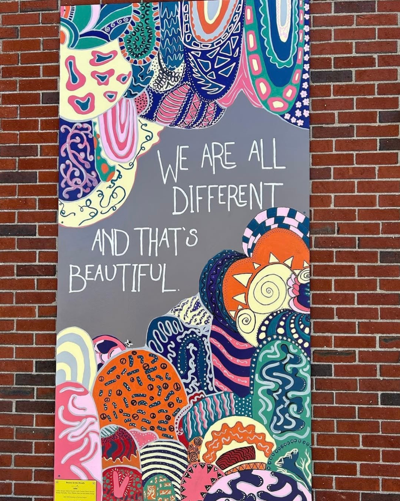
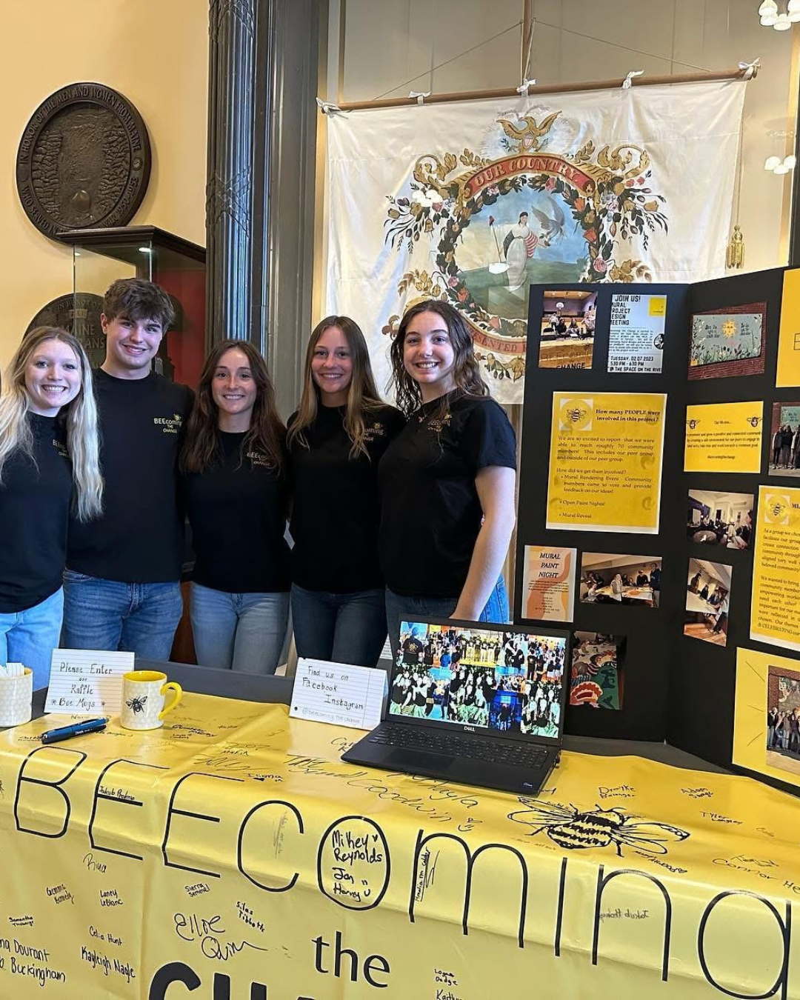
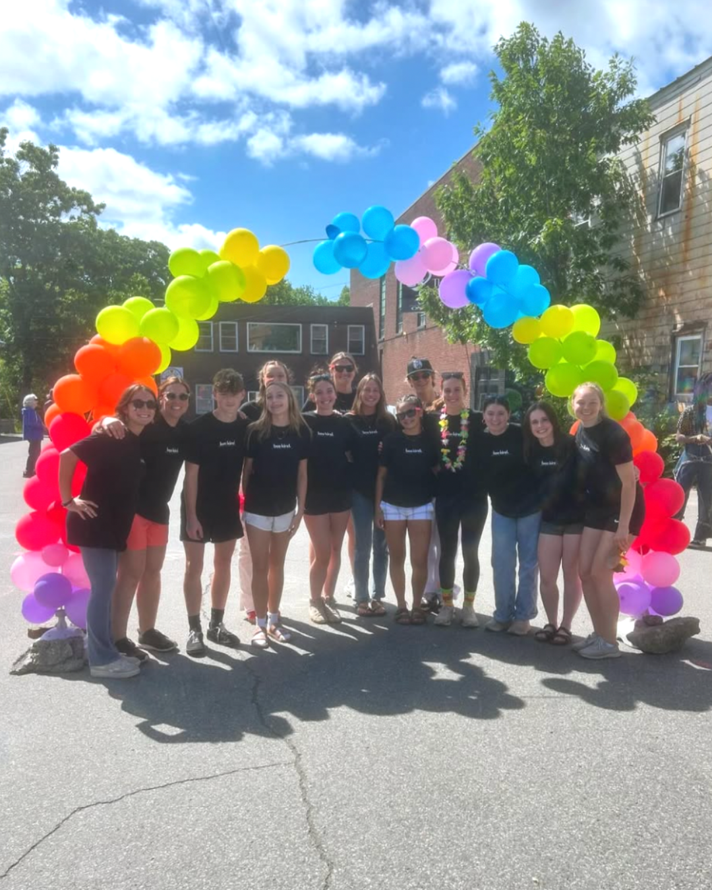

Beecoming the Change
In 2022, I co-founded Beecoming the Change with my mentor and a group of high school students in my hometown of Skowhegan, Maine. The organization was built to bring youth and community together after the COVID-19 pandemic, and amid high political tensions.
Outcome
We collectively formed the mission statement: “To promote and grow a positive and connected community by creating a safe environment for our peers to engage in kind acts, take risks, and work towards a common goal.”
The “bees” have commissioned multiple public art pieces, host an annual free back-to-school clothing drive, and organize an annual Pride 5K – the first LGBTQ+ Pride event in central Maine.


